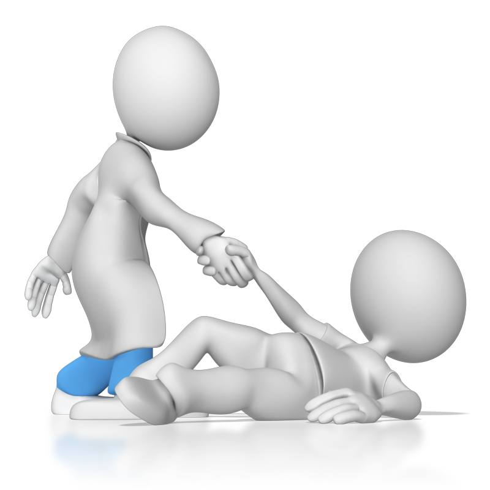
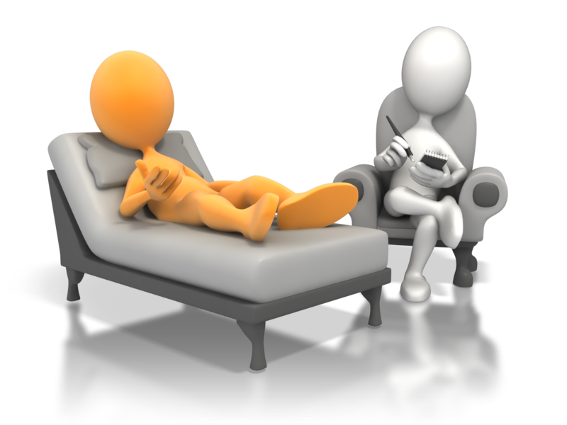
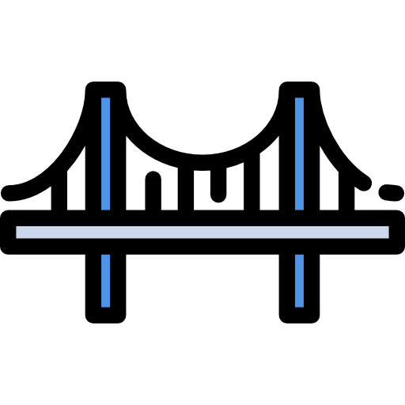

Sports Injury c'est quoi?
Bonjour, je suis le créateur du concept de SportInjury (SI). Je suis un pratiquant de sport assidu depuis des années et en particulier de VolleyBall (Nationale 2) et CrossFit.
Comme toutes personnes faisant du sport, ou commençant, je me suis fait ces dernières années une multitude de différentes blessures plus ou moins "graves".
Cependant il est de plus en plus difficile d'obtenir des rendez-vous chez les médecins et encore plus chez les spécialistes.
J'ai donc eu l'idée, dans le cadre d'un projet, de crée un site qui permettrai d'aider les gens qui se posent des questions sur leurs "petits" problèmes physique et de les accompagner.
- Informer les utilisateurs des problèmes les plus courants.
- Les motiver à se soigner et continuer le sport.
- Aider en accompagnant la reprise du sport.
- Gagner du temps en orientant pour les prises de rendez-vous.
- Donner des conceils d'exercices de réeducation aux personnes déjà diagnostiquées.
- Rassurer sur les douleurs que l'on peut ressentir.
- Créer un pont avec la plate-forme Doctolib.
Tout simplement aider les gens à prendre soin d'eux
!! ATTENTION !!
Ce site d’aide à l'identification de blessure ne remplace pas un avis médical.
Bien que ce site ait été conçu en collaboration avec des médecins,
il ne constitue en aucun cas une consultation personnalisée.
Les informations sont fournies à titre indicatif et ne doivent pas être
utilisées pour établir un diagnostic ou débuter un traitement sans l’avis
d’un professionnel de santé. Pour toute question ou inquiétude concernant
votre santé, il est impératif de consulter votre médecin traitant.
Nous invitons nos utilisateurs à se connecter via un compte  , ce qui permettrait de faire la transition plus rapidement vers la plateforme de prise de rendez-vous.
, ce qui permettrait de faire la transition plus rapidement vers la plateforme de prise de rendez-vous.
Vous pouvez cependant créer un compte S.I qui vous permettra d'enregistrer votre historique de consultation en sauvegardant les vidéos que vous avez aimé, laisser des commentaires, envoyer des messages ou du contenu aux administrateurs.
Vous désirez nous CONTACTER ? Pensez à vous connecter ou créer un compte !